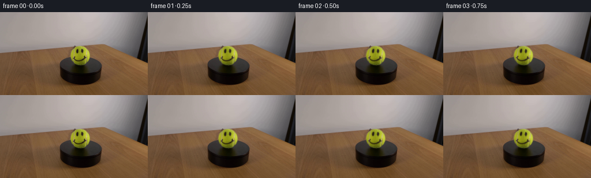
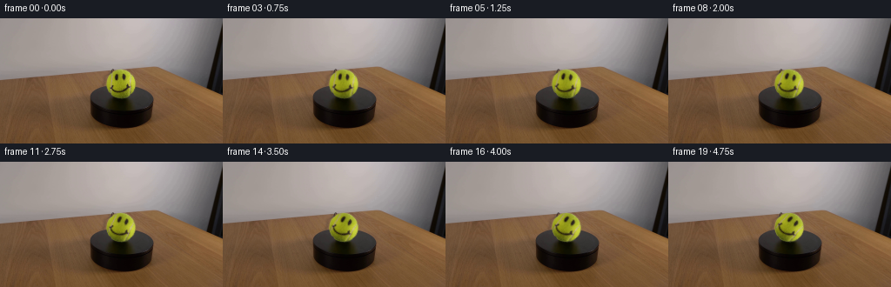
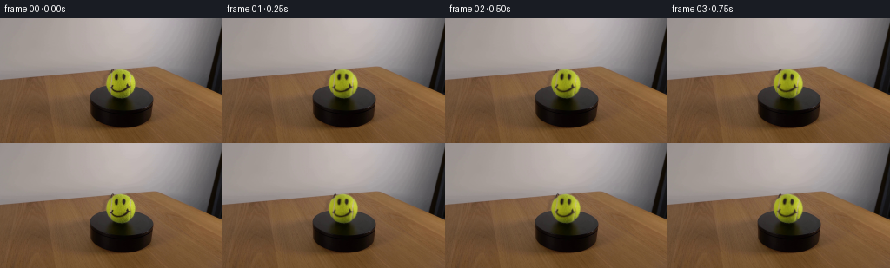

CODING AGENTS AS PIXEL WORLD MODELS
traex/DeepSeek-V4.1-Flash · 0166
点击播放 · 原生 RGB 像素
逐轮保存的候选
回放视频、检查图与代码变化。
每份候选均可单独播放。实际图片检查记录在下方工具轨迹中。
候选 01播放与检查图
点击播放 · 原生 RGB 像素

展开代码变化
--- 上一保存版本
+++ 本次保存版本
@@ -0,0 +1,85 @@
+from pathlib import Path
+
+import numpy as np
+from PIL import Image
+
+import artifact_io
+
+
+WIDTH = 256
+HEIGHT = 144
+FRAMES = 20
+FPS = 4
+
+# Measured from the supplied frame. The circular silhouette is rotated in
+# place, so the platform, support, and camera remain perfectly static.
+CENTER_X = 138.5
+CENTER_Y = 74.5
+RADIUS = 17.0
+ROTATION_DEGREES = 40.0
+
+
+def bilinear_sample(image, x, y):
+ """Sample an RGB image at subpixel coordinates with edge clamping."""
+ x0 = np.floor(x).astype(np.int32)
+ y0 = np.floor(y).astype(np.int32)
+ x1 = x0 + 1
+ y1 = y0 + 1
+ wx = (x - x0)[..., None]
+ wy = (y - y0)[..., None]
+
+ x0 = np.clip(x0, 0, image.shape[1] - 1)
+ x1 = np.clip(x1, 0, image.shape[1] - 1)
+ y0 = np.clip(y0, 0, image.shape[0] - 1)
+ y1 = np.clip(y1, 0, image.shape[0] - 1)
+
+ top = image[y0, x0] * (1.0 - wx) + image[y0, x1] * wx
+ bottom = image[y1, x0] * (1.0 - wx) + image[y1, x1] * wx
+ return top * (1.0 - wy) + bottom * wy
+
+
+def rotate_ball(source, angle_degrees):
+ """Rotate the ball texture clockwise about its optical center."""
+ image = source.astype(np.float32)
+ frame = image.copy()
+
+ yy, xx = np.mgrid[0:HEIGHT, 0:WIDTH]
+ dx = xx - CENTER_X
+ dy = yy - CENTER_Y
+ distance = np.hypot(dx, dy)
+ patch = distance <= RADIUS + 1.0
+
+ angle = np.deg2rad(angle_degrees)
+ cos_a = np.cos(angle)
+ sin_a = np.sin(angle)
+
+ # Inverse-map the clockwise rotation. Coordinates use image convention
+ # (positive y points down), so this moves texture features clockwise.
+ source_x = CENTER_X + cos_a * dx + sin_a * dy
+ source_y = CENTER_Y - sin_a * dx + cos_a * dy
+ rotated = bilinear_sample(image, source_x[patch], source_y[patch])
+
+ # A one-pixel feather avoids a stair-stepped rim while leaving every pixel
+ # outside the measured silhouette exactly equal to the source frame.
+ alpha = np.clip((RADIUS + 0.5 - distance[patch]) / 1.0, 0.0, 1.0)[:, None]
+ frame[patch] = image[patch] * (1.0 - alpha) + rotated * alpha
+
+ return np.clip(np.rint(frame), 0, 255).astype(np.uint8)
+
+
+def main():
+ case_dir = Path(__file__).resolve().parent
+ first = np.asarray(Image.open(case_dir / "first_frame.png").convert("RGB"))
+
+ frames = np.empty((FRAMES, HEIGHT, WIDTH, 3), dtype=np.uint8)
+ frames[0] = first
+ for index in range(1, FRAMES):
+ seconds = index / FPS
+ angle = ROTATION_DEGREES * seconds / (FRAMES / FPS)
+ frames[index] = rotate_ball(first, angle)
+
+ artifact_io.save(frames, case_dir)
+
+
+if __name__ == "__main__":
+ main()
候选 02播放与检查图
点击播放 · 原生 RGB 像素


展开代码变化
--- 上一保存版本
+++ 本次保存版本
@@ -13,9 +13,9 @@
# Measured from the supplied frame. The circular silhouette is rotated in
# place, so the platform, support, and camera remain perfectly static.
-CENTER_X = 138.5
-CENTER_Y = 74.5
-RADIUS = 17.0
+CENTER_X = 139.0
+CENTER_Y = 75.0
+RADIUS = 16.5
ROTATION_DEGREES = 40.0
@@ -47,7 +47,7 @@
dx = xx - CENTER_X
dy = yy - CENTER_Y
distance = np.hypot(dx, dy)
- patch = distance <= RADIUS + 1.0
+ patch = distance <= RADIUS + 0.5
angle = np.deg2rad(angle_degrees)
cos_a = np.cos(angle)
@@ -61,7 +61,7 @@
# A one-pixel feather avoids a stair-stepped rim while leaving every pixel
# outside the measured silhouette exactly equal to the source frame.
- alpha = np.clip((RADIUS + 0.5 - distance[patch]) / 1.0, 0.0, 1.0)[:, None]
+ alpha = np.clip((RADIUS + 0.25 - distance[patch]) / 1.0, 0.0, 1.0)[:, None]
frame[patch] = image[patch] * (1.0 - alpha) + rotated * alpha
return np.clip(np.rint(frame), 0, 255).astype(np.uint8)
可观测工具轨迹
实际执行的命令与返回图片。
命令 1exit 0
/bin/bash -c "pwd && rg --files -g '"'!*__pycache__*'"' -g '"'!*.pyc'"' | sed -n '1,200p'"
命令 2exit 0
/bin/bash -c "sed -n '1,240p' prompt.txt"
命令 3exit 0
/bin/bash -c "sed -n '1,280p' GENERATION_RULES.md"
命令 4exit 0
/bin/bash -c 'file first_frame.png && identify first_frame.png 2>/dev/null || true && ls -lah'
命令 5exit 0
/bin/bash -c "sed -n '1,260p' artifact_io.py"
命令 6exit 1
/bin/bash -c "python - <<'PY'
from PIL import Image
import numpy as np
im=np.array(Image.open('first_frame.png').convert('RGB'))
print(im.shape, im.dtype, 'minmax', im.min((0,1)), im.max((0,1)), 'mean', im.mean((0,1)))
# quantize 16 levels and top clusters
q=(im//16)
keys=q[:,:,0]*256+q[:,:,1]*16+q[:,:,2]
vals,cnts=np.unique(keys,return_counts=True)
for idx in np.argsort(cnts)[-30:][::-1]:
k=vals[idx]; c=cnts[idx]
print(c, (int(k//256)*16,int((k//16)%16)*16,int(k%16)*16))
PY"命令 7exit 0
/bin/bash -c "python - <<'PY'
from PIL import Image
import numpy as np
im=np.array(Image.open('first_frame.png').convert('RGB'))
q=(im//16).astype(np.int32)
keys=q[:,:,0]*256+q[:,:,1]*16+q[:,:,2]
vals,cnts=np.unique(keys,return_counts=True)
for idx in np.argsort(cnts)[-30:][::-1]:
k=int(vals[idx]); c=int(cnts[idx])
print(c, (int(k//256)*16,int((k//16)%16)*16,int(k%16)*16))
PY"命令 8exit 0
/bin/bash -c "python - <<'PY'
try:
import cv2; print('cv2',cv2.__version__)
except Exception as e: print('no cv2',e)
try:
import scipy; print('scipy',scipy.__version__)
except Exception as e: print('no scipy',e)
PY"命令 9exit 0
/bin/bash -c "python - <<'PY'
import cv2, numpy as np
im=cv2.imread('first_frame.png')
g=cv2.cvtColor(im,cv2.COLOR_BGR2GRAY)
for p2 in [15,20,25,30,35,40]:
c=cv2.HoughCircles(g,cv2.HOUGH_GRADIENT,1.0,20,param1=80,param2=p2,minRadius=8,maxRadius=80)
print('p2',p2, None if c is None else np.round(c[0],1).tolist())
PY"命令 10exit 0
/bin/bash -c "python - <<'PY'
from PIL import Image
import numpy as np
im=np.array(Image.open('first_frame.png').convert('RGB')).astype(int)
# points
for y in [0,5,10,20,30,40,50,60,70,74,80,90,100,110,120,130,143]:
print('y',y, [(x,tuple(im[y,x])) for x in [0,10,30,60,90,110,120,128,139,150,160,180,210,240,255]])
PY"命令 11exit 0
/bin/bash -c "python - <<'PY'
from PIL import Image
import numpy as np
im=np.array(Image.open('first_frame.png').convert('RGB')).astype(float)
# 2x2 block x=108..172 y=43..107
for y in range(43,108,2):
row=''
for x in range(108,172,2):
p=im[y:y+2,x:x+2].mean((0,1)); r,g,b=p; lum=p.mean()
if lum<35: ch='#'
elif g>r*0.95 and g>b*1.25 and g>45: ch='Y'
elif r>g*1.12 and g>b*1.10 and lum>50: ch='b'
elif lum>110 and max(p)-min(p)<35: ch='.'
elif lum>150: ch='W'
elif lum<70: ch='x'
else: ch=' '
row+=ch
print(f'{y:3d} {row}')
print(' '+''.join(str((x//10)%10) for x in range(108,172,2)))
print(' '+''.join(str((x//2)%10) for x in range(108,172,2)))
PY"命令 12exit 0
/bin/bash -c "python - <<'PY'
from PIL import Image
import numpy as np
im=np.array(Image.open('first_frame.png').convert('RGB')).astype(float)
# compare rows/cols for scene structure: mean RGB by rows and cols
for y in range(0,144,4):
m=im[y:y+4].mean((0,1)); print('R',f'{y:3d}',*(f'{v:5.1f}' for v in m))
print('COLS')
for x in range(0,256,8):
m=im[:,x:x+8].mean((0,1)); print('C',f'{x:3d}',*(f'{v:5.1f}' for v in m))
PY"命令 13exit 0
/bin/bash -c "python - <<'PY'
from PIL import Image
import numpy as np, colorsys
im=np.array(Image.open('first_frame.png').convert('RGB')).astype(int)
# 1 px coordinates with selected classifications
for y in range(56,96):
row=''
for x in range(118,161):
r,g,b=im[y,x]; h,s,v=colorsys.rgb_to_hsv(r/255,g/255,b/255)
if max(r,g,b)<20: ch='#'
elif s>0.4 and 45<h*360<90 and v>0.2: ch='Y' # green/yellow
elif r>g*1.2 and g>b*1.2 and v>0.15: ch='b' # brown table
elif v>0.55 and s<0.22: ch='.'
elif v>0.75: ch='W'
elif v<0.3: ch='x'
else: ch=' '
row+=ch
print(f'{y:3d} {row}')
print(' '+''.join(str(x//10%10) for x in range(118,161)))
print(' '+''.join(str(x%10) for x in range(118,161)))
# hue distribution ball-ish circle
for y in [58,60,62,64,66,68,70,72,74,76,78,80,82,84,86,88,90,92]:
print('y',y,[(x,tuple(im[y,x])) for x in [123,126,129,132,135,138,141,144,147,150,153,156]])
PY"命令 14exit 0
/bin/bash -c "python - <<'PY'
from PIL import Image
import numpy as np
im=np.array(Image.open('first_frame.png').convert('RGB')).astype(int)
# color segmentation estimate ball using green dominance, connected comps
mask=(im[:,:,1]>im[:,:,2]*1.35)&(im[:,:,1]>im[:,:,0]*0.9)&(im[:,:,1]>45)
ys,xs=np.where(mask)
print(xs.min(),xs.max(),ys.min(),ys.max(),len(xs))
# fit circle by boundary? print green mask bbox rows
for y in range(55,94):
xx=np.where(mask[y])[0]
if len(xx): print(y, xx.min(),xx.max(),len(xx))
# border background around circle
PY"命令 15exit 0
/bin/bash -c "python - <<'PY'
from PIL import Image
import numpy as np
im=np.array(Image.open('first_frame.png').convert('RGB')).astype(int)
# row edge/color values around ball left-right
for y in [58,59,60,61,62,63,64,65,70,75,80,85,88,90,91,92]:
vals=[]
for x in range(116,162):
r,g,b=im[y,x]
vals.append((x,r,g,b))
print('Y',y)
print(' '.join(f'{x}:{r:02x}{g:02x}{b:02x}' for x,r,g,b in vals))
PY"命令 16exit 0
/bin/bash -c 'python generate.py'
命令 17exit 0
/bin/bash -c "python - <<'PY'
import numpy as np
from PIL import Image
from pathlib import Path
src=np.array(Image.open('first_frame.png').convert('RGB'))
frames=np.stack([np.array(Image.open(p)) for p in sorted(Path('frames').glob('*.png'))])
print('shape/dtype:',frames.shape,frames.dtype)
print('frame0 exact:',np.array_equal(frames[0],src),'maxdiff',np.abs(frames[0].astype(int)-src.astype(int)).max())
for i in range(1,len(frames)):
d=np.abs(frames[i].astype(int)-frames[i-1].astype(int))
ys,xs=np.where(d.max(2)>0)
print(i, 'changed',len(xs),'bbox', (xs.min(),ys.min(),xs.max(),ys.max()) if len(xs) else None,'mean',round(float(d.mean()),4),'max',int(d.max()))
PY"命令 18exit 0
/bin/bash -c "ls -lh frames pixels.npz inspection.png transition_check.png index.html && python - <<'PY' from PIL import Image import numpy as np for f in ['inspection.png','transition_check.png']: im=np.array(Image.open(f)); print(f,im.shape,im.min(),im.max(),round(float(im.mean()),2)) PY"
命令 19exit 0
/bin/bash -c "python - <<'PY'
from PIL import Image
import numpy as np
from pathlib import Path
# Summarize the changing sphere crop as coarse RGB luminance/hue maps.
for idx in [0,5,10,15,19]:
im=np.array(Image.open(f'frames/{idx:02d}.png').convert('RGB')).astype(int)
crop=im[57:94,120:158]
print('\\nFRAME',idx,'crop mean',np.round(crop.mean((0,1)),2),'range',crop.min((0,1)),crop.max((0,1)))
for y in range(0,37,2):
row=''
for x in range(0,38,2):
r,g,b=crop[y:y+2,x:x+2].mean((0,1)); v=(r+g+b)/3
row += '#' if v<35 else 'Y' if g>b*1.6 and g>r*.9 and g>45 else 'b' if r>g*1.15 and g>b*1.1 else '.' if v>115 and max(r,g,b)-min(r,g,b)<30 else '+' if v>65 else ' '
print(row)
PY"命令 20exit 0
/bin/bash -c "python - <<'PY'
from PIL import Image
import numpy as np
im=np.array(Image.open('first_frame.png').convert('RGB')).astype(float)
for cy in [74.5,75.0,75.5]:
print('CENTER',cy)
yy,xx=np.mgrid[0:144,0:256]
rr=np.hypot(xx-138.5,yy-cy)
for lo in np.arange(13,18.6,.5):
m=(rr>=lo)&(rr<lo+.5)
p=im[m]; gdom=(p[:,1]-p[:,2]).mean(); lum=p.mean()
print(f'{lo:4.1f}-{lo+.5:4.1f} n={len(p):3d} lum={lum:6.1f} g-b={gdom:6.1f}')
PY"命令 21exit 0
/bin/bash -c "python - <<'PY'
from PIL import Image
import numpy as np
im=np.array(Image.open('first_frame.png').convert('RGB')).astype(float)
# radial profiles by octants, luminance and green dominance
for y,x in [(58,138),(59,138),(60,138),(61,138),(62,138),(63,138),(64,138),(65,138),(66,138),(67,138),(68,138),(69,138),(70,138),(71,138),(72,138),(73,138),(74,138),(75,138),(76,138),(77,138),(78,138),(79,138),(80,138),(81,138),(82,138),(83,138),(84,138),(85,138),(86,138),(87,138),(88,138),(89,138),(90,138),(91,138)]:
r,g,b=im[y,x]
print(y, x, 'd',round(abs(y-74.5),1),'rgb',r,g,b,'g-b',round(g-b,1))
PY"命令 22exit 0
/bin/bash -c "python generate.py && python - <<'PY'
import numpy as np
from PIL import Image
from pathlib import Path
src=np.array(Image.open('first_frame.png').convert('RGB'))
frames=np.stack([np.array(Image.open(p)) for p in sorted(Path('frames').glob('*.png'))])
print('shape/dtype:',frames.shape,frames.dtype)
print('frame0 exact:',np.array_equal(frames[0],src))
for i in range(1,len(frames)):
d=np.abs(frames[i].astype(int)-frames[i-1].astype(int))
ys,xs=np.where(d.max(2)>0)
print(i,'changed',len(xs),'bbox',(int(xs.min()),int(ys.min()),int(xs.max()),int(ys.max())),'mean',round(float(d.mean()),4),'max',int(d.max()))
PY"命令 23exit 0
/bin/bash -c "python - <<'PY'
import json, re
from pathlib import Path
import numpy as np
from PIL import Image
frames=np.stack([np.asarray(Image.open(p).convert('RGB')) for p in sorted(Path('frames').glob('*.png'))])
with np.load('pixels.npz') as z:
packed=z['pixels']
rgb=np.stack([(packed>>16)&255,(packed>>8)&255,packed&255],axis=-1)
print('npz:',packed.shape,packed.dtype,'matches_frames:',np.array_equal(rgb,frames))
html=Path('index.html').read_text()
print('player:',len(html),'bytes','embedded_frames:',len(re.findall(r'\"deltas\"',html)))
print('first_exact:',np.array_equal(frames[0],np.asarray(Image.open('first_frame.png').convert('RGB'))))
print('all_finite_uint8:',frames.dtype==np.uint8 and frames.shape==(20,144,256,3))
PY"命令 24exit 0
/bin/bash -c "python - <<'PY'
import numpy as np
from PIL import Image
from pathlib import Path
frames=np.stack([np.asarray(Image.open(p).convert('RGB')) for p in sorted(Path('frames').glob('*.png'))])
with np.load('pixels.npz') as z:
p=z['pixels']
for ch,shift in enumerate([16,8,0]):
v=((p>>shift)&255).transpose(2,0,1)
d=np.abs(v.astype(int)-frames[:,:,:,ch].astype(int))
print(ch, np.array_equal(v,frames[:,:,:,ch]), d.max(), np.count_nonzero(d), np.mean(d))
# Compare a few
print(frames[1,74,138],p[74,138,1])
PY"保存候选 2 份；完成命令 24 次；可验证图片返回 0 张。原始 API 响应与完整日志保留在本地。